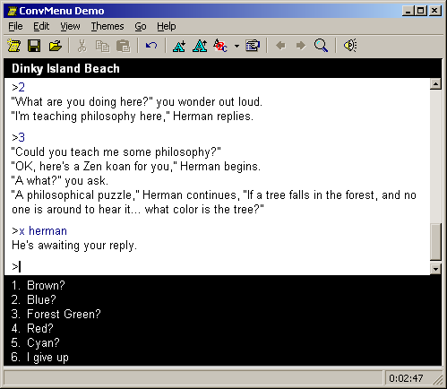

ConvMenu is a module for adding non-modal conversation menus to TADS 3 games, while retaining the powerful conversational framework provided by TADS 3, simply by adding captions to TopicEntries.
The code should be fairly well-documented, but a hastily written sample game is also available.
Due to lack of inspiration, I ripped Ron (the insurance salesman) from the T3 Sample Game and Herman Toothrot (the meditating hermit) from Monkey Island II. I hope Mike and LucasArts don't mind.

convmenu.t (21 kB) - the menu module, version 1.1a.
convmenusample.t (15 kB) - the sample game source.
Copyright 2002-13 Søren Løvborg. The text of this page is licensed under a Creative Commons Attribution-Share Alike 3.0 License.